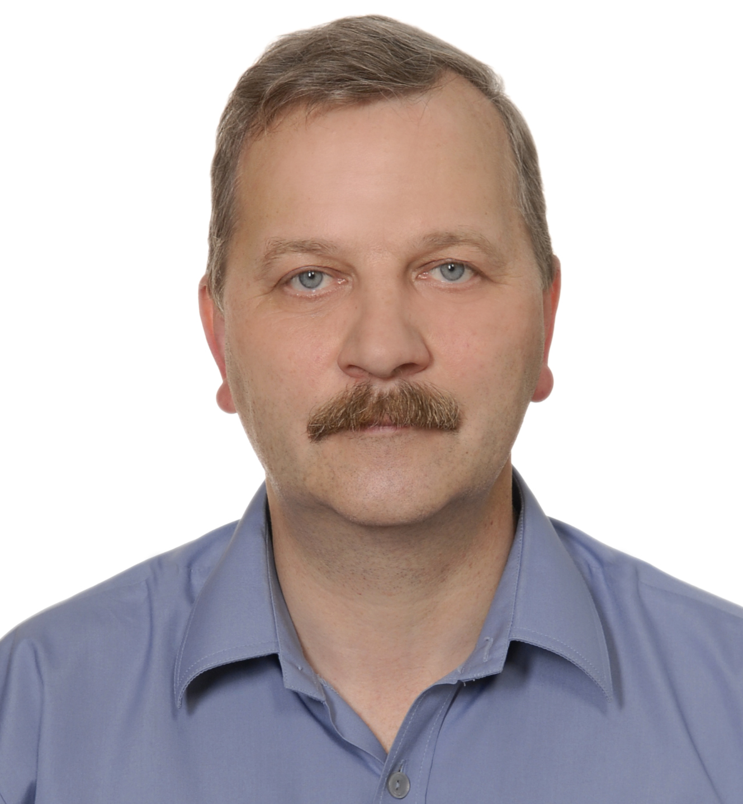

Logistyka
Logistyka to cały wszechświat zagadnień ...
Curriculum Vitae
mgr inż. Dariusz KUPIEC
adres:ul. Nieduszyńskiego 20/4
85-796 Bydgoszcz
nr telefonu: +48 535 023 514
e-mail: d.kupiec@ron.mil.pl
Doświadczenie zawodowe
I.2007 – obecnie Inspektorat Wsparcia Sił Zbrojnych - Bydgoszcz
Specjalista / starszy specjalista:
– Oddział Wsparcia Dowodzenia – Wydział Informatyki
– Szefostwo
Transportu i Ruchu Wojsk – Centrum Koordynacji Ruchu Wojsk
(System Śledzenia Zasobów i Monitorowania Przesyłek RFID)
– Oddział Logistycznych Systemów Informatycznych i Indeksacji.
Zakres obowiązków:
Przedstawiciel
Sił Zbrojnych RP w NATO Working Group w latach 2008-2018:
Śledzenia
Zasobów AST WG, Sprawozdawczości Logistycznej LOGREP WG, Zarządzania
Informacją Logistyczną LOG IMG WG oraz Systemu Funkcjonalnego
Logistyki LOGFS.
Organizator systemu indeksacji wyrobów obronnych Jednolitego Indeksu Materiałowego.
Organizator Sojuszniczego Informatycznego Systemu Logistycznego LOGFAS w SZ RP.
V.2006 – XII.2006 2 KOP – Korpus Obrony Powietrznej - Bydgoszcz
Specjalista Szefostwa Planowania Logistycznego.
Zakres obowiązków:
Planowanie działalności i sprawozdawczość logistyczna za dowództwo oraz jednostki podległe korpusu Sił Powietrznych.
VII.2001 – IV.2006 18 RWT – Rejonowe Warsztaty Techniczne - Gdynia
Kierownik Sekcji Technologiczne / Administrator Sieci Komputerowej.
Zakres obowiązków:
Organizator systemu obsługowo-remontowego sprzętu techniki wojskowej.
Organizacja i nadzór nad systemem kontroli jakości.
Administrowanie LAN i programowanie.
IX.1987 – VI.2001 JW 5021 - Władysławowo
Kierownik Sekcji Technicznej, Dowódca Posterunku / Inżynier Obsługi Stacji Radiolokacyjnej, Administrator Lokalnej Sieci Komputerowej.
Zakres obowiązków:
Organizacja eksploatacji uzbrojenia i sprzętu wojskowego.
Eksploatacja i i bojowe wykorzystanie urządzeń radiotechnicznych.
Budowa i zarządzanie Lokalną Siecią Komputerową / programowanie.
Wykształcenie
1982 – 1987 Wojskowa Akademia Techniczna – Warszawa
Wydział Elektroniki – jednolite studia magisterskie.
1994 – 1995 Politechnika Gdańska – Gdańsk
Wydział Zarzadzania i Organizacji – studia podyplomowe.
2009 - 2010 Akademia Obrony Narodowej - Warszawa
Systemy Gospodarcze i Logistyczne – studia podyplomowe.
Umiejętności
Kursy i szkolenia: NATO Communications and Information Systems School (NCISS) Latina,
Joint Logistics Education Center (CEFLI) Roma.
Certyfikat Electronic Commerce Code Management Association (ECCMA) - ISO 8000 Master Data Quality Manager
Języki obce: Angielski: STANAG 6001 level 3,2+,3,2+
Rosyjski: umiejętność czytania dokumentacji technicznej (nieudokumentowana)
Znajomość IT: Systemy Operacyjne i Sieci Teleinformatyczne – administrowanie (Implementing & Supporting Microsoft Windows – MS Official Course - 2272C).
(LINUX Operating System - Kurs konfiguracji i administrowania Slackware).
Aplikacje biurowe – zaawansowany.
Aplikacje biznesowe – zaawansowany (SAP-LO020;LO100;LO150;BW310)
Programowanie – doświadczenie w tworzeniu kodu w językach obiektowych oraz językach obsługi baz danych.
POŚWIADCZENIA DO INFORMACJI TAJNYCH do 2025, POUFNYCH do 2028,
BEZPIECZEŃSTWA: NATO SECRET do 2025, NATO CONFIDENTIAL do 2028.
EU SECRET do 2025, EU CONFIDENTIAL do 2028.
Kurs administratorów i inspektorów bezpieczeństwa teleinformatycznego prowadzony przez służby ochrony państwa
Doświadczenia dodatkowe
2013 - 2017 Doświadczenia w sektorze edukacyjnym:
Prowadzenie wykładów, kursów i szkoleń w WAT w Warszawie i CSLog w Grudziadzu.
1998 - 2002 Praca w samorządzie lokalnym:
Radny – przewodniczący Komisji Budżetu i Finansów miasta Władysławowo.
Przewodniczący Komisji Rewizyjnej Komunalnego Związku Gmin.
Członek Rady Nadzorczej Przedsiębiorstwa Użyteczności Publicznej.
1997- 2006 Praca w ośrodkach szkoleniowych i centrach konferencyjnych:
Ministerstwo Finansów - “Bałtyk” w Jastrzębiej Górze.
Ministerstwo Sprawiedliwości - „Jurysta” w Jastrzębiej Górze.
Ministerstwo Spraw Wewnętrznych i Administracji - „Cristal” w Jastrzębiej Górze
Logistyka to cały wszechświat zagadnień ...
Informatyka to kolejny wszechświat zagadnień ...
To cały wszechświat zagadnień ...